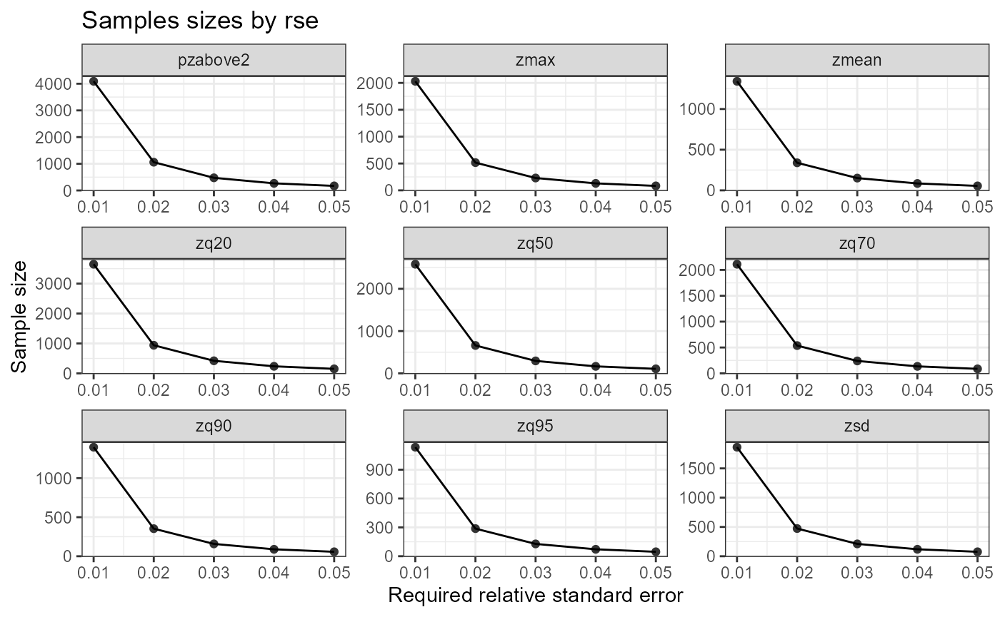
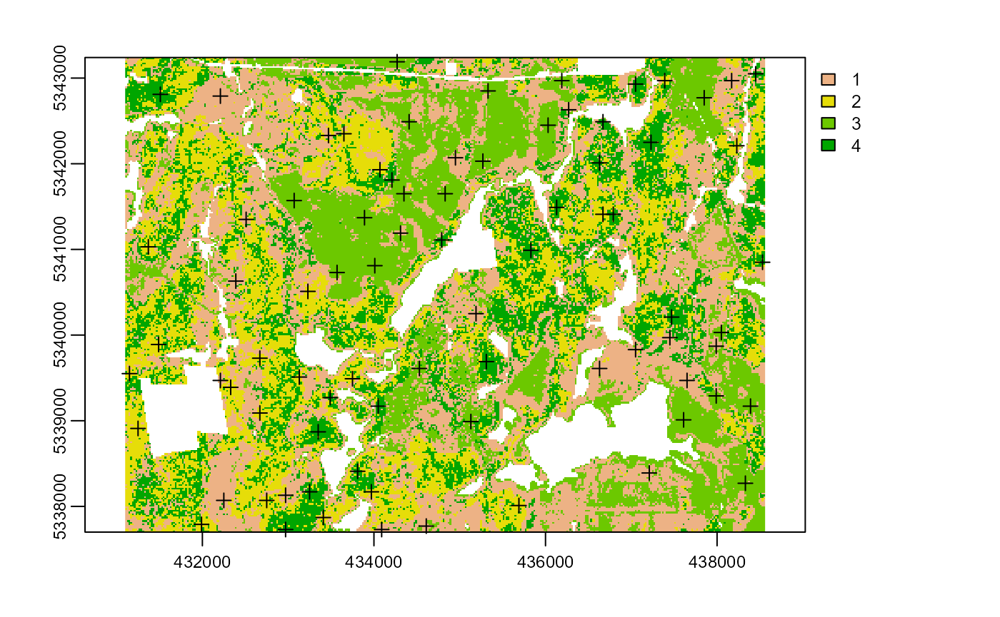

calculating
calculating.Rmd
calculate_* functions
A total of 7 calculate functions currently exist in the package:
calculate_distance- per pixel distance to closest access vectorcalculate_pcomp- calculate principal components on inputmrastercalculate_allocation- calculate the number of samples needed for samples within ansraster- proportional / optimal / equal samplingcalculate_ahels- apply the adapted Hypercube Evaluation of a Legacy Sample (ahels) algorithm to existing samplescalculate_coobs- apply count of observations algorithm to existing samplescalculate_lhsPop- calculate population covariate statistics for latin hypercube samplingcalculate_lhsOpt- calculate optimal latin hypercube sampling paramters including sample number
As mentioned in a few locations throughout this sgsR tutorial, the calculate_* functions serve as helper functions. In this section we outline how these functions can be used.
calculate_distance
The calculate_distance function take input raster and access data and outputs a per pixel distance to the nearest access point. This function has particular value for constraining sampling protocols such the sample_clhs function where the output raster layer can be used as a cost constraint.
calculate_distance(raster = sraster, # input
access = access, # define access road network
plot = TRUE) # plot
#> class : SpatRaster
#> dimensions : 277, 373, 2 (nrow, ncol, nlyr)
#> resolution : 20, 20 (x, y)
#> extent : 431100, 438560, 5337700, 5343240 (xmin, xmax, ymin, ymax)
#> coord. ref. : +proj=utm +zone=17 +ellps=GRS80 +towgs84=0,0,0,0,0,0,0 +units=m +no_defs
#> sources : memory
#> memory
#> names : strata, dist2access
#> min values : 1, 0
#> max values : 4, 1060The output raster is the input with the calculated dist2access layer appended.
calculate_distance(raster = mraster, # input
access = access, # define access road network
filename = tempfile(fileext = ".tif")) # write file to disc
#> class : SpatRaster
#> dimensions : 277, 373, 10 (nrow, ncol, nlyr)
#> resolution : 20, 20 (x, y)
#> extent : 431100, 438560, 5337700, 5343240 (xmin, xmax, ymin, ymax)
#> coord. ref. : +proj=utm +zone=17 +ellps=GRS80 +towgs84=0,0,0,0,0,0,0 +units=m +no_defs
#> sources : wall_metrics.tif (9 layers)
#> memory
#> names : zmax, zmean, zsd, pzabove2, zq20, zq50, ...
#> min values : 0, 0, 0, 0, 0, 0, ...
#> max values : 23.82, 100.00, 25.71, 18.08, 21.02, 27.60, ...
calculate_pcomp
The calculate_pcomp function take a mraster as input and perform principal component analysis. The number of components defined by the nComp parameter specify the number of components that should be rasterized to output.
calculate_pcomp(mraster = mraster, # input
nComp = 5, # number of components to output
plot = TRUE ) # plot
#> class : SpatRaster
#> dimensions : 277, 373, 5 (nrow, ncol, nlyr)
#> resolution : 20, 20 (x, y)
#> extent : 431100, 438560, 5337700, 5343240 (xmin, xmax, ymin, ymax)
#> coord. ref. : +proj=utm +zone=17 +ellps=GRS80 +towgs84=0,0,0,0,0,0,0 +units=m +no_defs
#> sources : memory
#> memory
#> memory
#> ... and 2 more source(s)
#> names : PC1, PC2, PC3, PC4, PC5
#> min values : -6.675657, -14.741405, -1.735068, -9.384677, -1.272558
#> max values : 13.828171, 4.197435, 4.022076, 1.821104, 2.243303
calculate_pcomp(mraster = mraster, # input
nComp = 3, # number of components to output
plot = TRUE, # plot
details = TRUE) # details about the principal component analysis appended
#> $pca
#> Standard deviations (1, .., p=9):
#> [1] 2.66328897 1.09805898 0.66339469 0.41858538 0.22109594 0.14478794
#> [7] 0.09669328 0.07739106 0.02581106
#>
#> Rotation (n x k) = (9 x 9):
#> PC1 PC2 PC3 PC4 PC5
#> zmax 0.3718561 0.05890652 0.13655303 0.18644188 -0.02967021
#> zmean 0.2892076 0.11179079 -0.94037185 0.11669464 -0.01101177
#> zsd 0.2902484 -0.57132611 0.07358411 -0.03485495 -0.12710815
#> pzabove2 0.2762415 0.57389014 0.11046261 -0.48982874 -0.53278380
#> zq20 0.3222793 0.42913513 0.17765055 0.04688184 0.69772164
#> zq50 0.3621931 0.06711670 0.16260903 0.50497308 -0.03554264
#> zq70 0.3669446 -0.07622676 0.13483825 0.33474905 -0.33679147
#> zq90 0.3576125 -0.24286784 0.04467110 -0.28486752 0.00494469
#> zq95 0.3463317 -0.27351876 -0.03548477 -0.50997312 0.31217248
#> PC6 PC7 PC8 PC9
#> zmax -0.022902433 0.058181544 0.12813760 -0.885232514
#> zmean 0.061423536 0.005559276 -0.04493042 0.001085691
#> zsd 0.373461072 -0.062831197 -0.65029797 -0.015746780
#> pzabove2 0.007219003 0.005909104 -0.23569527 0.052045306
#> zq20 0.371793616 -0.128585416 -0.12943905 0.141020587
#> zq50 -0.525190662 0.398814446 -0.24627692 0.293390931
#> zq70 0.136444231 -0.587797301 0.42249155 0.270652072
#> zq90 0.287643242 0.607152727 0.49439800 0.184814994
#> zq95 -0.583751620 -0.320739852 0.05279230 0.005601089
#>
#> $raster
#> class : SpatRaster
#> dimensions : 277, 373, 3 (nrow, ncol, nlyr)
#> resolution : 20, 20 (x, y)
#> extent : 431100, 438560, 5337700, 5343240 (xmin, xmax, ymin, ymax)
#> coord. ref. : +proj=utm +zone=17 +ellps=GRS80 +towgs84=0,0,0,0,0,0,0 +units=m +no_defs
#> sources : memory
#> memory
#> memory
#> names : PC1, PC2, PC3
#> min values : -6.675657, -14.741405, -1.735068
#> max values : 13.828171, 4.197435, 4.022076
calculate_allocation
The calculate_allocation function calculates the total number of samples that should be allocated based on a total sample value (nSamp) and an input sraster. This function is utilized in a number of functions including sample_strat. Two methods for allocation are currently included: proportional (prop), and optimal (optim) allocation.
- Proportional - Samples are allocated based on the area coverage of strata. This is the default method.
- Optimal - Samples are allocated based on the within strata variation.
- Equal - The same number of samples (
nSamp) are allocated to each strata.
Proportional Allocation
#--- perform grid sampling ---#
calculate_allocation(sraster = sraster,
nSamp = 200)
#> strata total
#> 1 1 72
#> 2 2 46
#> 3 3 42
#> 4 4 40
#--- calculate existing samples to include ---#
e.sr <- extract_strata(sraster = sraster,
existing = existing)
calculate_allocation(sraster = sraster,
nSamp = 200,
existing = e.sr)
#> strata total need
#> 1 1 -6 72
#> 2 2 -9 46
#> 3 3 3 42
#> 4 4 12 40Notice that some of the results in total above are negative. This indicates that the existing samples over represent those strata and that some samples should be removed to avoid over representation.
Optimal Allocation
Proportional allocation determine the number of samples based on the weights of strata. Optimal allocation utilizes within strata variation to allocate samples. This means that in addition to providing and sraster, that an mraster and a specific metric must be provided to calculate variation and appropriately allocate samples.
calculate_allocation(sraster = sraster, # stratified raster
nSamp = 200, # desired sample number
existing = e.sr, #existing samples
allocation = "optim", # optimal allocation
mraster = mraster$zmax, # metric raster
force = TRUE) # force nSamp number
#> strata total need
#> 1 1 -11 67
#> 2 2 -2 53
#> 3 3 -9 30
#> 4 4 22 50Equal allocation
There may be an instance where a user wants to have the same number of samples allocated to each strata. In this case using allocation = equal is ideal.
sample_strat(sraster = sraster, # stratification raster
nSamp = 20, # desired number of samples for each strata
mindist = 400, # minimul distance between samples
allocation = "equal", # allocation type
plot = TRUE) # plot output
#> Processing strata : 1
#> Processing strata : 2
#> Processing strata : 3
#> Processing strata : 4
#> Simple feature collection with 80 features and 3 fields
#> Geometry type: POINT
#> Dimension: XY
#> Bounding box: xmin: 431150 ymin: 5337730 xmax: 438530 ymax: 5343190
#> CRS: +proj=utm +zone=17 +ellps=GRS80 +towgs84=0,0,0,0,0,0,0 +units=m +no_defs
#> First 10 features:
#> strata type rule geometry
#> x 1 new rule1 POINT (437990 5339870)
#> x1 1 new rule1 POINT (434310 5341190)
#> x2 1 new rule1 POINT (435190 5340250)
#> x3 1 new rule1 POINT (437050 5339830)
#> x4 1 new rule1 POINT (433470 5342330)
#> x5 1 new rule1 POINT (432510 5341350)
#> x6 1 new rule1 POINT (432250 5338070)
#> x7 1 new rule1 POINT (432210 5339470)
#> x8 1 new rule1 POINT (432210 5342790)
#> x9 1 new rule1 POINT (437210 5338390)That yields a total of 80 samples (20 nSamp for each of the 4 strata in sraster.)
Sample evaluation algorithms
The following algorithms were initially developed by Dr. Brendan Malone from the University of Sydney. In their work they graciously provided an in depth description of the functionality of these algorithms that were originally developed to improve soil sampling strategies. I have taken the initial scripts Dr. Malone provided to the community and implemented functions so they can be used for structurally guided sampling approaches. Many thanks to Dr. Malone for being an excellent collaborator and proponent of open source algorithms.
Please consult the original reference for these ideas and scripts as they are extremely valuable and helpful for understanding their sampling rationale.
Malone BP, Minansy B, Brungard C. 2019. Some methods to improve the utility of conditioned Latin hypercube sampling. PeerJ 7:e6451 DOI 10.7717/peerj.6451
calculate_coobs
The calculate_coobs function perform the COunt of OBServations (coobs) algorithm using existing sample data and mraster covariates. This algorithm aids the user in determining where additional samples could be located by comparing existing samples to each pixel and associated mraster covariates. The output coobs raster could be used to constrain clhs sampling using the sample_clhs to areas that are underreprented.
The coobs raster determines how many observations are similar in terms of the covariate space at every pixel. Given that this is fairly computationally intensive, I have implemented parallel processing for this function, but users should be patient to allow processing to complete.
calculate_coobs(mraster = mraster, # input
existing = existing, # existing samples
cores = 4, # parallel cores to use
details = TRUE, # provide details from algorithm output
plot = TRUE, # plot
filename = tempfile(fileext = ".tif")) # write output raster to tifLatin hypercube sampling evaluation algorithms
The following 2 algorithms provide a means to maximize the effectiveness of latin hypercube sampling protocols.
calculate_lhsPop
The calculate_lhsPop function calculates population level statistics about the mraster covariates being used including calculating principal components, quantile distributions, and Kullback–Leibler divergence testing. The outputs from this function are mandatory for use of the calculate_lhsOpt function described in the next section.
#--- by default all statistical data are calculated ---#
calculate_lhsPop(mraster = mraster) # input The output details the following:
$values- Pixel values frommraster$pcaLoad- PCA loadings$matQ- Quantile matrix$matCov- Covariate matrix
#--- statistical analyses can be chose by setting their parameter to `FALSE` ---#
calculate_lhsPop(mraster = mraster, # input
nQuant = 10, # desired number of quantiles
PCA = FALSE) # choose not to calculate PCA's
calculate_lhsOpt
The calculate_lhsOpt function performs an bootsrapped latin hypercube sampling approach where a population level analysis of mraster data is performed to determine the optimal Latin hypercube sample size.
Using statistical data calculated using the calculate_lhsPop and varying sample sizes defined by minSamp, maxSamp, step and rep. Sampling protocols are conducted and statistical effectiveness of those sampling outcomes are evaluated to determine where sample size is minimized and statistical representation is maximized.
This function is currently fairly slow to run as parallel is still being implemented.
#--- calculate lhsPop details ---#
poplhs <- calculate_lhsPop(mraster = mr)
calculate_lhsOpt(popLHS = poplhs)
calculate_lhsOpt(popLHS = poplhs,
PCA = FALSE,
iter = 200)